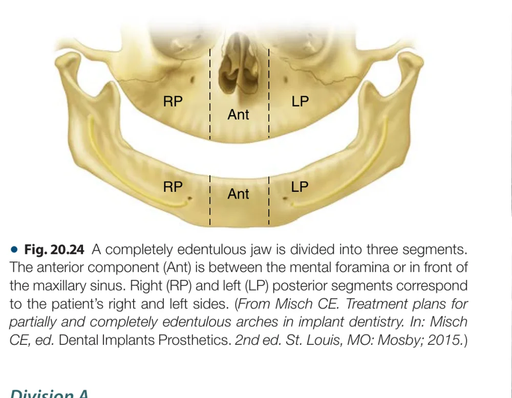
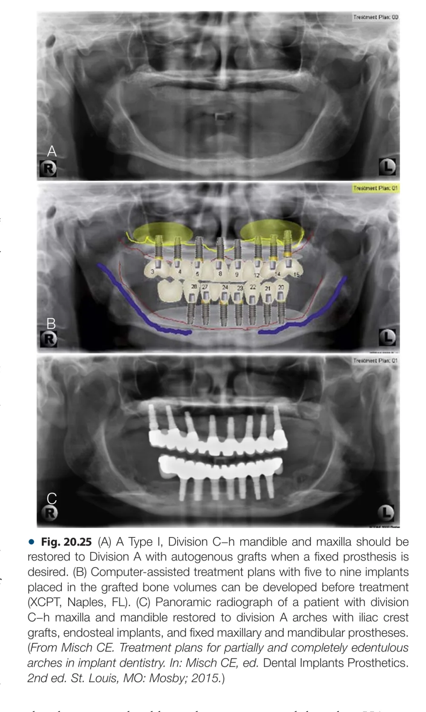

نسخه استخراجشده؛ ترجمه یا تأیید علمی انجام نشده است. وضعیت: captured
وقتی قوس کاملاً بیدندان است، دیگر نمیتوان از کلاس کندی استفاده کرد. دستگاه دیگری لازم است.
«فک بیدندان به سه ناحیه تقسیم میشود (یک قدامی و دو خلفی) و بر پایهی طبقهبندی میشـجودی توصیف میشود.»
و مرزهای دقیق:
• در مندیبل: «بخشهای خلفی راست و چپ از فورامن منتال تا پد رتروملار امتداد دارند، و ناحیهی قدامی میان دو فورامن منتال قرار دارد.»
• و معادل دندانیاش: «بخش قدامی معمولاً از مزیال پرمولر اول تا مزیال پرمولر اول امتداد دارد، بهدلیل شایعترین موقعیت فورامن.»
• در ماگزیلا: «بخش قدامی از ناحیهی میان پرمولرهای اول تشکیل شده و معمولاً قدامیتر از سینوس ماگزیلا است.»
به منطق این مرزبندی دقت کن. در هر دو فک، مرز بخش قدامی را یک ساختار آناتومیک تعیین میکند — فورامن منتال در مندیبل و سینوس در ماگزیلا. یعنی «بخش قدامی» ناحیهای است که سینوس یا کانال مندیبولار ارتفاعش را محدود نمیکند.
و همین تعریف، توضیح میدهد چرا در همهی طرحهای قوس کامل، بخش قدامی نقش محوری دارد.
و اکنون سه نوع، بر پایهی اینکه دیویژن استخوان در این سه بخش چگونه توزیع شده:
نوع ۱: «در قوس بیدندان نوع ۱، دیویژن استخوان در هر سه بخش آناتومیک مشابه است.»
و یک نکتهی دیگر: «بنابراین چهار دستهی متفاوت از قوسهای بیدندان نوع ۱ وجود دارد» — یعنی نوع ۱ با دیویژن A، B، C یا D.
نوع ۲: «در قوس کاملاً بیدندان نوع ۲، بخشهای خلفی استخوان مشابهاند ولی با بخش قدامی تفاوت دارند.»
نوع ۳: «در قوسهای بیدندان نوع ۳، بخشهای خلفی ماگزیلا یا مندیبل با یکدیگر تفاوت دارند.»
و یک قید دقیق که باید بدانی: «قوس نوع ۳ است، حتی وقتی ناحیهی قدامی مشابه یکی از بخشهای خلفی باشد.»
یعنی معیار تعیینکننده، تفاوت میان دو بخش خلفی است — نه رابطهی قدام با خلف.
و منطق این سهگانه را ببین:
• نوع ۱ — همه یکسان: سادهترین، چون یک راهبرد برای کل قوس کار میکند
• نوع ۲ — قدام با خلف فرق دارد: دو راهبرد لازم است، ولی قوس متقارن است
• نوع ۳ — دو خلف با هم فرق دارند: قوس نامتقارن است
و عدم تقارن، همان چیزی است که طرح را دشوار میکند — چون از یونیت ۲٫۲ میدانی که پروتز قوس کامل به توزیع متعادل تکیهگاهها نیاز دارد، و یک سمت ضعیفتر، کل سیستم را نامتوازن میکند.
و یک راهنمای عملی برای نوع ۲: در قوس نوع ۲ دیویژن A و B، «بخشهای خلفی ممکن است با ایمپلنتهای باریک درمان شوند، در حالی که بخش قدامی برای ایمپلنتهای ریشهای با قطر بزرگتر کافی است.»
و وقتی خلف بسیار تحلیل رفته است (نوع ۲ دیویژن A و C)، رایجترین گزینه در مندیبل: «یک طرح درمان با بیومکانیک مساعد، ایمپلنتها را در بخش قدامی مندیبل قرار میدهد و قوس را با بخشهای خلفی کانتیلورشده ترمیم میکند.»
و از یونیت ۲٫۲ میدانی که طول این کانتیلور را چه چیزی تعیین میکند — گسترهی A-P ضربدر ۲٫۵، و آن هم تنها وقتی عوامل نیرو پایین و تراکم استخوان خوب باشد.

این بخش، اعداد عملی قوس کامل را میدهد.
نوع ۱ دیویژن A — استخوان فراوان در هر سه بخش:
«بهعنوان یک قاعدهی کلی، بازهی ۵ تا ۹ ایمپلنت ممکن است در مندیبل و ۶ تا ۱۰ ایمپلنت در ماگزیلا برای یک پروتز ثابت به کار رود.»
به تفاوت دو فک دقت کن — بازهی ماگزیلا یکی بالاتر است. و دلیلش را از یونیت ۲٫۳ میدانی: ماگزیلا تراکم استخوان کمتری دارد، پس به شمار یا عرض بیشتری نیاز دارد.
و این با قاعدهی یونیت ۲٫۲ میخواند که گفت مطالعات قوس کامل، شش ایمپلنت را بر چهار ایمپلنت ترجیح میدهند و اینکه «شمار ایمپلنتها باید بهندرت از حداقل عدد استفاده کند.»
نوع ۱ دیویژن B — استخوان کافی برای ایمپلنت باریک در هر سه بخش:
و یک راهبرد که تفاوت قدام و خلف را نشان میدهد:
«رویهی رایج این است که بخش قدامی استخوان در مندیبل با استئوپلاستی به دیویژن A تبدیل شود و ایمپلنتهای ریشهای با اندازهی ایدهآل در این ناحیه قرار گیرند.»
ولی: «کمتر پیش میآید که ارتفاع کافی در ماگزیلای خلفی یا مندیبل خلفی برای اجازه دادن به استئوپلاستی جهت بهبود دیویژن وجود داشته باشد.»
باز همان الگو: قدام بخشنده است، خلف نیست. و همان مرز ۱۰ میلیمتری از یونیت ۲٫۳ اینجا هم حاکم است.
و راهحل خلف: «بنابراین چند ایمپلنت باریکتر اغلب در مندیبل اندیکاسیون دارند اگر ایمپلنتهای خلفی بدون گرافت قرار گیرند. یک ایمپلنت برای هر ریشهی دندان به کار میرود تا کاهش سطح پشتیبانی ایمپلنت جبران شود.»
«یک ایمپلنت برای هر ریشه» — این عبارت را در یونیت ۲٫۲ هم دیدی، آنجا در سختترین سناریوی نیرو. اینجا میبینی که همان قاعده در کمبود عرض هم به کار میآید. منطقش یکی است: وقتی نمیتوانی سطح هر ایمپلنت را زیاد کنی، شمار را زیاد کن.
و دو گزینهی افزایش برای ماگزیلا: «افزایش با گسترش استخوان (bone spreading) ممکن است در ماگزیلا اندیکاسیون داشته باشد، اگر بیمار پروتز ثابت بخواهد، بهویژه وقتی در برابر دندانهای طبیعی قرار دارد.» و: «اگر عوامل استرس زیاد باشند، افزایش جانبی هم ممکن است در نواحی خلفی برای افزایش قطر ایمپلنت لازم باشد.»
به قید «بهویژه وقتی در برابر دندانهای طبیعی قرار دارد» دقت کن — این همان عامل قوس مقابل از یونیت ۲٫۴ است که اینجا تصمیم جراحی را تغییر میدهد.
نوع ۱ دیویژن C-w — ارتفاع کافی، عرض ناکافی. و اینجا انتخاب پروتز، مسیر جراحی را تعیین میکند:
• اگر بیمار پروتز متحرک ایمپلنتپشتیبان بخواهد: «استئوپلاستی ممکن است برای تبدیل ریج به C-h به کار رود. طرح درمان سپس از فرمول نوع ۱ دیویژن C-h پیروی میکند.»
• اگر ترمیم ثابت خواسته شود: «یک گرافت اُنلی اتوژن در قوس C-w معمولاً برای بازگرداندن ریج به دیویژن A پیش از جایگذاری ایمپلنت ضروری است.»
یک ریج، دو مسیر کاملاً متفاوت — و آنچه انتخاب میکند، خواستهی پروتزی است نه یافتهی جراحی. این دقیقاً همان اصل «از بالا به پایین» یونیت ۲٫۲ است.
نوع ۱ دیویژن C-h — و اینجا حکم روشن است:
«قوسهای بیدندان نوع ۱ دیویژن C-h اغلب همهی الزامات ضروری برای پشتیبانی ایمپلنتی قابل پیشبینی و بلندمدت برای پروتزهای ثابت را ندارند.»
پس توصیه: «یک پروتز متحرک ایمپلنتپشتیبان RP-4 یا RP-5 اغلب برای کاهش بارهای اکلوزال اندیکاسیون دارد.»
و یک ترجیح روشن میان آن دو:
«پروتز باید کاملاً ایمپلنتپشتیبان (RP-4) باشد تا تحلیل ادامهدار استخوان در نواحی خلفی دهان متوقف شود.»
و RP-5 تنها بهعنوان ناگزیری: «وقتی تنها ایمپلنتهای ریشهای قدامی دیویژن C قرار داده شوند، پشتیبانی بافت نرم خلفی (RP-5) ممکن است لازم باشد.»
این ترجیح RP-4 بر RP-5 را از یونیت ۲٫۳ به یاد داری — آنجا هم در دیویژن D دیدیم که RP-4 ترجیح داشت.
و راهبرد ماگزیلا — که یک هشدار مهم دارد:
«ماگزیلای بیدندان اغلب با یک پروتز متحرک متعارف درمان میشود تا مندیبل کاملاً بازسازی شود.»
و اگر آن دنچر به گیر یا ثبات بیشتری نیاز داشت: «هیدروکسیآپاتیت میتواند برای افزایش پرهماگزیلا به کار رود. این کار شکل ریج را مربعی میکند و مقاومت در برابر اکسکورسیونهای اکلوزال را حین عملکرد فراهم میکند.»
ولی یک هشدار روشن:
«با این حال، بیمار و پزشک باید بدانند که تحلیل استخوان ادامه خواهد یافت و جایگذاری آیندهی ایمپلنت را حتی دشوارتر خواهد کرد.»
یعنی این راهحل، مسئله را به تعویق میاندازد و همزمان بدترش میکند — و بیمار باید این را بداند.
و برای ماگزیلای C-h: «باید اغلب افزایش زیربینی همراه با ایمپلنتهای ریشهای در ناحیهی اِمینانس کانین و گرافت سینوس با ایمپلنتهای ریشهای با پروتز RP-4 در نظر گرفته شود.»
و یک قید صادقانه: «آموزش جراحی افزوده برای این دو گزینهی آخر لازم است، و بروز عارضهی بیشتری دارند.»
و در پایان، نوع ۱ دیویژن D — که هشدارش با یونیت ۲٫۳ یکی است:
«قوسهای بیدندان طبقهبندیشده بهعنوان نوع ۱ دیویژن D، چالشبرانگیزترین برای دندانپزشکی سنتی و ایمپلنت هستند.»
«اگر یک ایمپلنت در بیمار نوع ۱ دیویژن D شکست بخورد، شکستگیهای پاتولوژیک یا شرایط تقریباً غیرقابل ترمیم ممکن است حاصل شود.»
و توصیهی یونیت ۲٫۳ اینجا هم پابرجاست: گرافت اتوژن کرست ایلیاک پیش از هر تلاش ایمپلنتی، که پس از ۵ ماه یا بیشتر معمولاً دیویژن را به C-h یا A میرساند.
